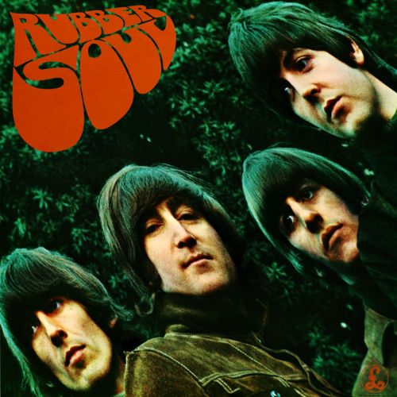
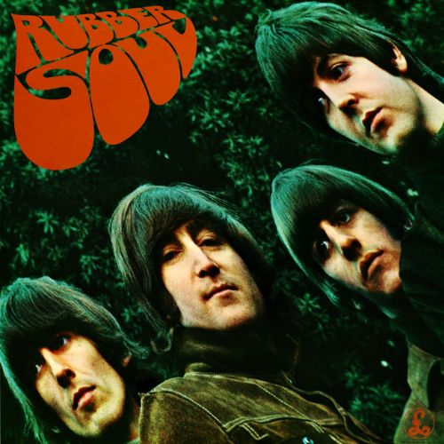
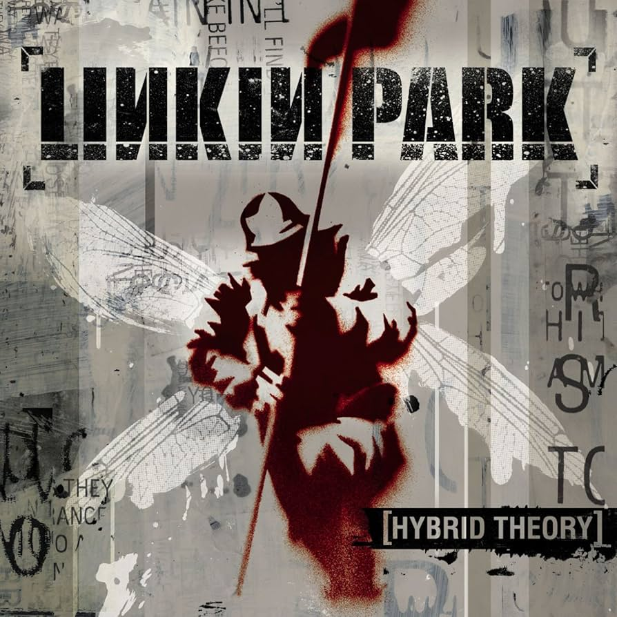

Neste post do meu blog pessoal, vou compartilhar com vocês as minhas três bandas favoritas no momento e falar um pouco sobre o meu álbum preferido de uma delas. Se você é apaixonado por música como eu, vai adorar descobrir o que torna essas bandas tão especiais e o porquê de eu amar tanto esse álbum em particular!
O terceiro lugar é ocupado por uma das primeiras bandas que comecei a escutar por escolha própria: System Of A Down. O que me fez gostar tanto deles é a forma como conseguem misturar sons pesados com sons mais calmos. Cada música deles é uma viagem por temas políticos, sociais e pessoais, e tudo isso embalado por guitarras distorcidas e ritmos intensos.

Meu álbum preferido da banda é o icônico Toxicity. É difícil escolher outro, já que esse álbum foi a porta de entrada para o som visceral e criativo do SOAD. Músicas como "Chop Suey!" e "Aerials" não apenas se destacam pelo peso, mas também pelas letras poderosas e cheias de significado. Toxicity é, sem dúvida, um marco do metal alternativo e sempre terá um lugar especial nas minhas playlists.
No segundo lugar, vem a icônica banda The Beatles, que dispensa apresentações. Eles foram pioneiros em inúmeras inovações sonoras, reinventando a música popular com suas experimentações e composições complexas. O impacto deles foi tão profundo que praticamente definiram o que entendemos hoje como música moderna, explorando diferentes gêneros e técnicas.
 

O que mais me atrai nos Beatles é como suas músicas antigas ainda são extremamente cativantes para mim. Desde criança, sempre gostei de ouvir músicas de Rock mais antigas do que minha geração atual, e os Beatles têm um charme que me conquistou. Entre todos os álbuns, meu favorito é o Revolver, um verdadeiro marco de criatividade, onde a banda misturou psicodelia com sons inovadores. Porém, não posso deixar de mencionar Rubber Soul, que também tem um lugar especial no meu coração, com sua transição para um som mais maduro e introspectivo.
Em primeiríssimo lugar está a banda Linkin Park, que recentemente voltou aos palcos com a nova vocalista, Emily Armstrong, após um longo hiato devido à morte prematura de Chester Bennington, o antigo vocalista. Esta se tornou minha banda favorita, talvez por ter sido uma das primeiras que realmente escolhi ouvir por conta própria no início da minha adolescência, junto com System Of A Down (SOAD), como já mencionei anteriormente.
Meu álbum preferido é o primeiro da banda, Hybrid Theory. Uma curiosidade é que o álbum recebeu o nome que a banda teria inicialmente, antes de uma mudança de última hora. Escolhi este álbum de estreia porque contém algumas das primeiras músicas que ouvi da banda, e foi através delas que me apaixonei por seu som, levando-me a explorar mais.
🎤R.I.P Chester❤️
Além das bandas que estão no meu top 3 atualmente, não posso deixar de mencionar outras que têm marcado presença constante nas minhas playlists ultimamente. Bandas que, de alguma forma, me acompanham no dia a dia.